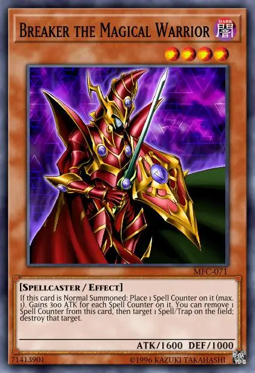
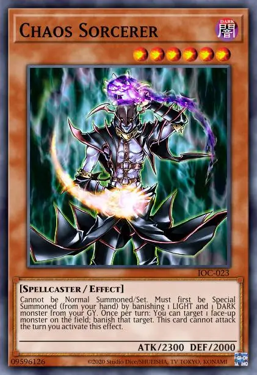
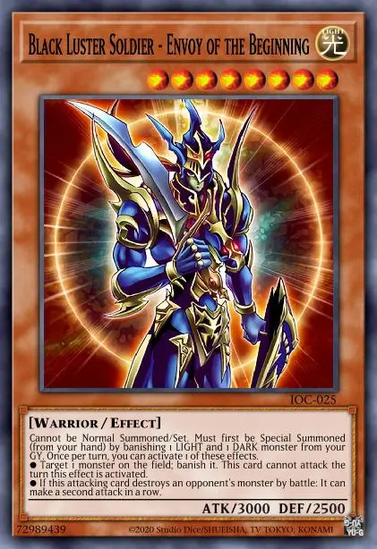
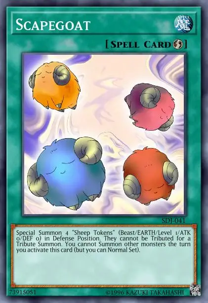
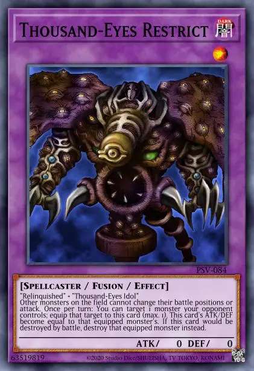
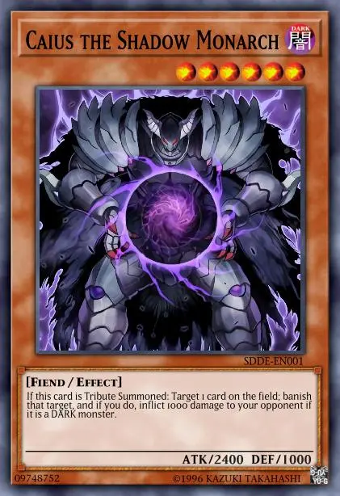
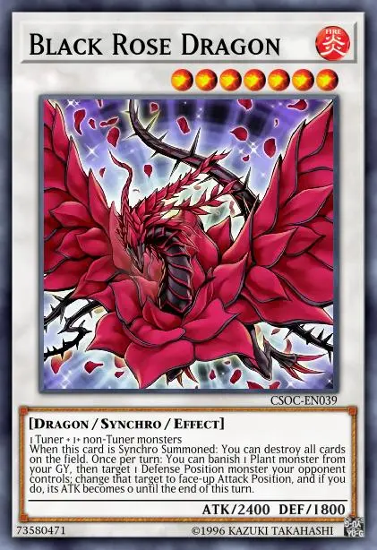
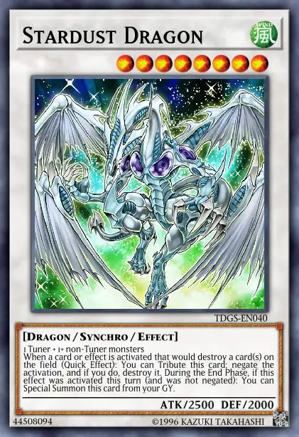
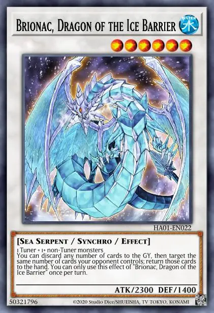
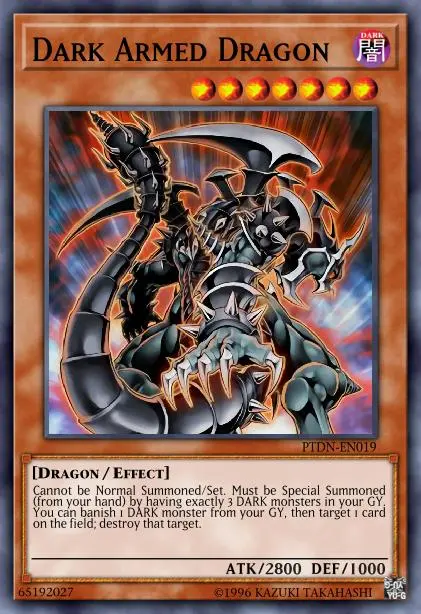

Learn retro Yu-Gi-Oh! formats, one step at a time.
Free courses for retro Yu-Gi-Oh! formats: the rules, the cards, the decks and how to think, from your first duel to a tournament deck. Pick a format to start.





Yu-Gi-Oh! as it was in the summer of 2005.
- A full course, from your first summon to a tournament deck
- Every Goat-legal card, the banlist and the top decks
Start learning →





Yu-Gi-Oh! as it was in April 2010.
- A full course, from your first summon to a tournament deck
- Every card, ruling and deck in one place
Start learning →
New
Play now →
Duel the computer
Learn Retro Play: Edison and Goat, four computer levels, free in your browser.